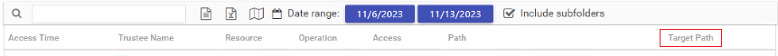

Question
How to establish the new name a file was renamed to in Access Information Center?
Answer
In Activity Details, right-click the header bar and select Target Path. The target path will show the new name of the renamed file.

How to establish the new name a file was renamed to in Access Information Center?
In Activity Details, right-click the header bar and select Target Path. The target path will show the new name of the renamed file.